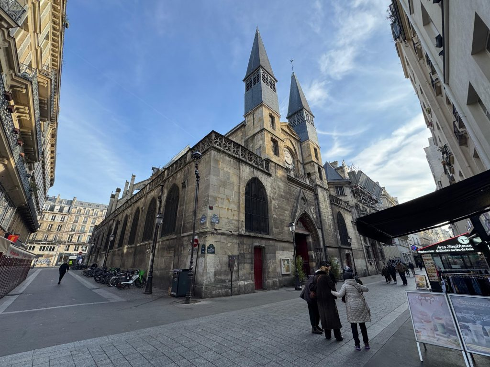
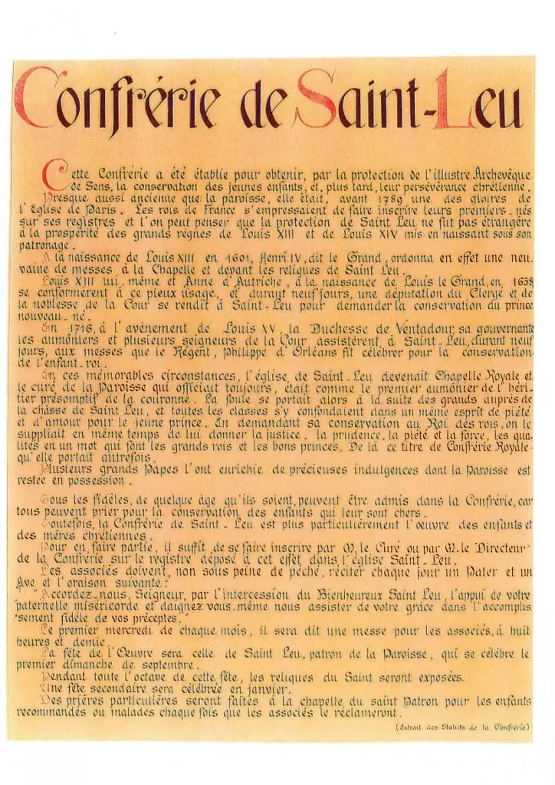
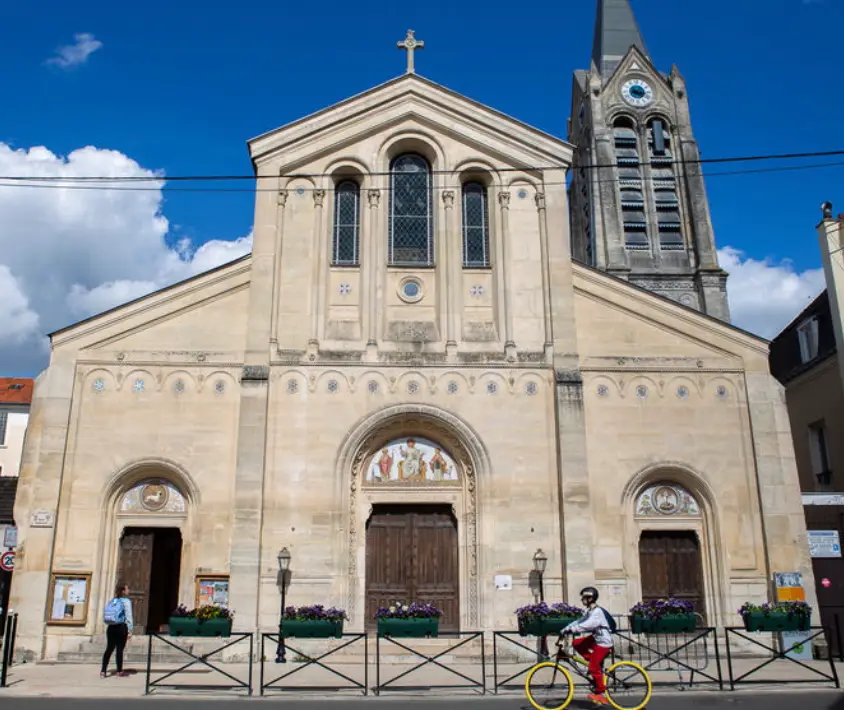

L’EGLISE SAINT-LEU SAINT-GILLES

Introduction
Au centre de Paris dans le 1er arrondissement, au milieu du parcours de la rue Saint-Denis,est la petite église de Saint-Leu – Saint Gilles. Elle est située entre la gigantesque canopée des Halles et le centre Pompidou, à proximité de la fontaine des Innocents, elle est née d’une modeste chapelle dédiée à saint Gilles, édifiée en 1235 par les moines de l’abbaye des bénédictins « Saint-Magloire ».
Gilles fuit un moine bénédictin ermite, né en 640 à Athènes, dans une famille d’origine royale, décédé en Gaule wisigothique le 1er septembre 720.
Histoire de l’église
Dates importantes
Un édifice historique
14eme siècle : construction de l’édifice sur l’ancien cardo romain, menant au lieu du martyre de saint Denis, 1er évêque de Paris. Cette voie est empruntée pour les grands évènements religieux et royaux au cours des siècles. (funérailles royales, départs en croisades, accueil des souverains étrangers…). St leu est la seule église subsistant d’une dizaine, dont celle, imposante et prestigieuse, du St Sépulcre.
Lieu de processions, pèlerinages et guérisons.
Accueil des pèlerins venant vénérer les reliques de st Leu (évêque thaumaturge du VI° siècle), st Gilles( ermite du VIII°, et ste Opportune (vierge du VIII°). L’importante abbaye St Magloire voisine bâtit un hôpital pour les pèlerins.
Plusieurs confréries furent créées à St Leu : la plus ancienne l’est par lettre patente de Charles VII en 1388 « Pour la santé des nouveaux nés et leur persévérance chrétienne ».
Des neuvaines de prières y sont demandées et suivies. Par Henri IV en 1602 pour le futur louis XIII ; en 1638 pour le futur Louis XIV ; en 1716 pour le futur Louis XV. Les seigneurs et dames de la cour, avec le peuple de Paris entourant la famille royale venaient alors en procession à St Leu. Cette confrérie sera supprimée, comme tant d’autres, en 1789.
Les reliques de sainte Hélène
- 1820 : translation à St Leu des reliques de ste Hélène depuis l’abbaye d’Hautvillers (diocèse de Reims), où elles étaient depuis 844, par l’Ordre du St Sépulcre, installé à St Leu depuis 1814.
- 1923 : création de la confrérie de la sainte Croix, réunissant les femmes nommées Hélène. Cette association de prière a pour but de faire connaître l’amour de la Croix du Seigneur, trouvée ( « inventée » : du latin invenio : découvrir) par sainte Hélène.
- 1925 : grand centenaire de l’arrivée des reliques. Cette date a été choisie ( plutôt que 1919), en lien avec la découverte de la Croix en 325.
Renaissance et engagement spirituel, caritatif et social
- Années 1970 : départ des activités de Halles pour Rungis. La paroisse Saint Leu- Saint Gilles est confiée au clergé de St Eustache ( les Oratoriens).
- En 1974, le cardinal Marty appelle Le Père Chevaleyre pour assurer la mission de prière et d’accueil, avec les Sœurs Dominicaines. Les Sœurs du Père de Foucault accompagnent les femmes en situation de prostitution.
- En 1983, le cardinal Lustiger appelle à St leu le Père Patrick Giros, qui avait fondé l’association « Aux Captifs la Libération », oeuvrant auprès des personnes sans abri, ou en situation de prostitution.
- En 1999 : arrivée de l’Ordre des Trinitaires ( fondé au XIII° siècle pour lutter contre toutes formes d’esclavage)
- En 2020 : présence du « Pôle mission » du diocèse de Paris, assurant une formation théologique, spirituelle et fraternelle pour développer les initiatives missionnaires en paroisse. En 2024, le Pôle Mission est installé par Mgr Ulrich à St Leu.


Les Origines
Gilles fuit un moine bénédictin ermite, né en 640 à Athènes, dans une famille d’origine royale, décédé en Gaule wisigothique le 1er septembre 720.
La légende rapporte qu’il fut nourri par une biche, qu’il avait sauvée des chasseurs. Cette chapelle était destinée aux laboureurs du domaine des bénédictins de Bourg-l’Abbé sur la route du Louvre à la basilique Saint-Denis. Les convois solennels de nos rois, notamment pour leurs inhumations, prirent cet axe qui devint la rue Saint-Denis, une artère importante à l’époque médiévale. Cette rue a été l’âme et le cœur de Paris, du fait du voisinage de la Prévôté (Châtelet). Elle a toujours été très commerçante et très populeuse.
Reconstruction et Expansion
L’urbanisation croissante rendit nécessaire une église plus adaptée. Elle fut construite en 1319. La nef actuelle est celle de cet édifice d’alors, les bas-côtés sont plus tardifs : XVIe siècle. Le chœur date du début du XVIIe. L’église prit le nom de Saint-Leu – Saint-Gilles.
Il faut se rappeler que le diocèse de Paris appartenait alors à la province ecclésiastique de Sens, dont saint Leu (saint Loup) avait été l’évêque.

Parmi les enfants de nobles, commerçants, artisans ou ouvriers, le roi Louis XV, fut inscrit à sa naissance pour obtenir la grâce de protection, par la duchesse de Ventadour, sur les registres de Saint-Leu – Saint-Gilles. Aujourd’hui disparus, d’autres églises, hospices ou maisons religieuses s’élevaient parmi des maisons d’habitation ou de commerce qui se serraient rue Saint-Denis.
En particulier à l’époque de la construction de l’église, en 1325, sous l’égide de Louis de Bourbon, à la tête d’une confrérie groupant des personnes ayant été en Terre Sainte, fut érigée, au n° 60, la collégiale du Saint-Sépulcre avec un hospice pour accueillir les pèlerins de Jérusalem.
Son portail principal rue Saint-Denis reproduisait le portail du croisillon sud de Notre-Dame. Mais l’intérieur était d’une si remarquable légèreté, que cette église menaçait de s’écrouler vers 1780.
En 1793, un comité révolutionnaire décida de fermer Saint-Leu. Sont alors supprimés tous signes de « féodalité », épitaphes, mausolées, armoiries… L’église est constituée « bien de la Nation ». Elle est vendue avec des immeubles voisins qu’elle possédait puis transformée en dépôt pour réserves des salaisons de charcutiers. Ensuite, elle est revendue à plusieurs reprises. Un abbé se ruina en la louant sur ses propres deniers pour la rendre au culte. Un autre la sauva d’une démolition par un entrepreneur intéressé par les pierres.
En 1905, Saint-Leu – Saint-Gilles subit la séparation des Églises et de l’État et devient « domaine communal public de la Ville de Paris ». Par crainte de ne pas avoir les moyens de louer à la Ville les quelques 1 200 m2 du presbytère, les membres du conseil économique de l’époque (les « marguilliers » de feu le « conseil de fabrique ») les abandonnèrent en grande partie « au domaine communal privé », ne conservant que 230 m2 sur la rue Saint-Denis. La Ville de Paris se partage depuis l’îlot Saint-Leu entre l’église et ses dépendances affectées au culte, qui sont inaliénables telle la sacristie (domaine public de la Ville), et les immeubles de l’ancien presbytère, cessibles (domaine privé de la Ville). L’entrée et l’escalier du boulevard de Sébastopol qui desservait plusieurs appartements des prêtres, dont celui du curé, furent abandonnée à la ville de Paris. Après diverses utilisations, ces murs logent actuellement, très largement, des protégés d’Emmaüs.
C’est grâce au Chanoine Panel, que le 16 octobre 1928, la Lieutenance de France de l’Ordre du St-Sépulcre a pu disposer des anciens fonts baptismaux devenant la très officielle « salle capitulaire », dont les grilles sont fermées à clef au seul usage de l’Ordre en France en accord avec le Diocèse « pour y tenir conseils et réunions ».
Une grande fête célèbra la réintégration de l’Ordre dans son antique sanctuaire. Le curé de Saint-Leu – Saint-Gilles, le très actif chanoine Panel, venait de fonder la confrérie de la Sainte-Croix sous le patronage de sainte Hélène et avait fêté brillamment 3 ans auparavant, le 22 novembre 1925, le centenaire de la translation de ses reliques. La concession officielle de l’ex-chapelle des fonds baptismaux à titre privative à la Lieutenance pour la France est commémorée ainsi par une plaque :« Les chevaliers du Saint-Sépulcre éloignés depuis un siècle de leur église St-Leu-St-Gilles ont réintégré ce pieux asile ».
Saint-Leu – Saint-Gilles connut une riche période active, sous les Forts des Halles et leurs familles, comme le relate une collection de bulletins paroissiaux jusqu’à la dernière guerre, depuis laquelle il n’existe plus d’archive au presbytère. L’entretien, par investissements, de l’église pendant cette période faste était financé par le « Comité des Amis de Saint-Leu – Saint-Gilles » créé entre autres par la duchesse de Vendôme, le maréchal Lyautey, Pierre Taittinger, Madame Maurice Barrès …Après la disparition des Halles pour Rungis, Saint Leu s’endormit. En 1975, l’archevêque de Paris, le cardinal François Marty eut le désir de réveiller une présence chrétienne en ce quartier lieu de passage entre ce qui allait devenir le Forum des Halles et le centre Georges Pompidou. Il répartit aux paroisses voisines Saint-Eustache, Saint-Nicolas-des-Champs et Saint-Merry le territoire de Saint-Leu – Saint-Gilles sans acter canoniquement la disparition de la paroisse.
L’église capitulaire du Saint-Sépulcre en France réunissait ce jour-là une grande assemblée présidée par le Cardinal Dubois. A cette époque l’archevêque de Paris était nommé « Grand Aumônier et Haut Protecteur » de l’Ordre.
L’église cesse alors ses fonctions de paroisse telles que baptêmes, catéchisme, mariages et obsèques. L’église fut rattachée à Saint-Eustache. Les deux églises eurent en 1976 le même vicaire avec le père Pierre Chevaleyre, de l’Oratoire de France. Le 1er septembre 1976, la communauté des sœurs de la Congrégation romaine de Saint Dominique s’est installée dans le quartier. Les sœurs ont progressivement donné une teinte à l’assemblée de Saint-Leu – Saint Gilles, notamment par l’accueil de groupes de prière du Renouveau charismatique. Saint-Leu – Saint-Gilles, communauté alors connue de toute la France dans les milieux charismatiques, était une sorte de quartier général, accueillant dans sa grande salle Saint-Leu de très nombreux priants ».
En 1983 le père Patrick Giros, fondateur en 1981 de l’association « Aux captifs, la libération », est nommé chapelain à Saint-Leu – Saint-Gilles et vicaire à Saint-Eustache En 1984, le cardinal Lustiger et la supérieure provinciale des sœurs Dominicaines ont passé une convention aux termes de laquelle, considérant le travail déjà accompli par les sœurs depuis leur arrivée, celles-ci se voyaient confier la mission d’assurer dans l’église Saint-Leu – Saint-Gilles une permanence de prière et d’accueil. L’accord prévoyait que le nombre de religieuses ne serait pas inférieur à trois .
En 1988 d’autres religieuses sont arrivées dans le quartier, les Petites sœurs de Jésus (de saint Charles de Foucauld), très engagées dans l’apostolat des prostituées de la rue Saint-Denis ». L’association « Aux captifs, la libération », dispose toujours d’une antenne abritée au presbytère et effectue des « tournées-rues » nocturnes dans le quartier. Ce sont des maraudes à « mains nues » plus particulièrement orientées sur des rencontres d’amitié. En 1999 le cardinal Lustiger confia l’administration de Saint Leu à l’ « Ordre de la Sainte Trinité et de la Rédemption des Captifs » (dit « Ordre des Trinitaires ») œuvrant auprès de tout individu entravé dans sa croissance humaine et spirituelle. L’ordre fut fondé au XIIe siècle pour racheter les chrétiens maintenus en esclavage en Orient. C’est lui qui racheta Louis IX aux Sarrasins. Les frères Trinitaires sauvent aujourd’hui d’autres formes d’esclavage. Ils étaient adaptés à la fin du XXe siècle aux actions spécifiques et atypiques imposées par un quartier soumis aux captivités de l’alcool, de la drogue, des maladies mentales et de la prostitution. En 2020 Monseigneur Michel Aupetit a nommé curé de la paroisse Saint-Leu – Saint Gilles le père diocésain Arnaud Bancon – le frère Trinitaire Odon Rakotoarimanana restant vicaire, poste où il avait été nommé en décembre 2019.
Une autre particularité de l’église Saint-Leu – Saint-Gilles est que depuis 2003 la liturgie orthodoxe y est célébrée. Chaque vendredi est chanté en slavon et en français l’hymne acathiste aux saints Constantin et Hélène. Un divine liturgie y est célébrée une fois par mois. Catholiques et orthodoxes se rassemblent chaque année en novembre pour célébrer avec les dames et les chevaliers du Saint-Sépulcre l’anniversaire de la translation des reliques de sainte Hélène à Paris.
Les Saints Protecteurs
Saint-Gilles
Né à Athènes en 640, saint Gilles, nourri par une biche selon la légende, devint ermite et fut vénéré pour sa piété et ses miracles.
Saint-Leu
Leu est né dans une famille de notables près d’Orléans en 573 et mourut près de Sens le 1er septembre 623. Les miracles de saint Leu le désignèrent tout particulièrement « protecteur des enfants ».
Les deux saints étaient célébrés le même jour, le 1er septembre, ce qui leur valut d’être protecteurs ensemble de la nouvelle église.
Les Chevaliers du Saint-Sépulcre
Après le Concordat un curé finit par plaider avec succès la cause de l’église auprès de Napoléon Ier. Il s’ensuivit une accalmie avec réparation des dommages. C’est sans doute le curé René-Victor de La Richardière, qui accueillit entre 1781 et 1783 les chevaliers et fidèles de l’église du Saint-Sépulcre, avec le déménagement, dit-on, de nombreuses œuvres d’art qui leur appartenaient. Cet ordre était composée de ceux qui, en Palestine, avaient été armés sur le tombeau du Christ et d’autres, simples pèlerins non chevaliers.
Ils construisirent en partie à leurs frais la chapelle du Sépulcre, qui est la crypte actuelle, pour y déposer le Christ au Tombeau.
Louis XVIII érigea l’ordre en France en ordre royal. Le Custode de Terre Sainte rappela qu’il était alors seul habilité à créer des chevaliers. Afin d’éviter toute éventuelle dérive l’archiconfrérie fut dissoute par le roi en 1824. Et après la Révolution de 1830 les chevaliers se dispersèrent une fois de plus.
Craignant sa destruction, les chevaliers du Saint-Sépulcre aménagèrent à leurs frais la crypte de l’église voisine, Saint-Leu, en demi sous-sol sous le chœur. Ils y déposèrent « le Christ au tombeau » sculpté, dit-on, par le père du peintre du Roi Soleil, Charles Le Brun. Cette crypte devint la chapelle capitulaire en France des chevaliers du Saint-Sépulcre de Jérusalem
La Révolution et la Restauration
En France les chevaliers reprirent leurs habitudes à Saint-Leu dès que l’église put les recevoir, mais ils ne s’y réunirent plus quand survint la Révolution de 1848.
Ensuite leur influence fut sans doute capitale lors des grands travaux de 1857 à 1861 pour le percement du boulevard Sébastopol, comme on le voit avec leurs armoiries sculptées sur les arcades de chacune des chapelles. En 1858, lors du percement du boulevard de Sébastopol le chevet de l’église est raboté de près de 5 mètres et trois chapelles supprimées. Mais compte tenu de l’importance de ce nouvel axe, constitutif de « la Grande Croisée » voulue par Napoléon III, Haussmann, dont ce fut l’une des premières opérations, la dota de gros moyens. L’église devait être un monument phare situé sur le nouveau boulevard.
Ce qui fut fait de façon heureuse en construisant les chapelles latérales, le déambulatoire entourant le chœur, la grande chapelle de la Vierge et les beaux immeubles du presbytère.
Les architectes de la ville Etienne-Hippolyte Godde (1781-1869), adepte du style néo-classique et Victor Baltard (1805-1874) développeur de structures nouvelles sont chargés du chantier.
Baltard a adopté le style de la Renaissance, en vogue dans cette partie du XIXe siècle, comme en témoigne l’illustre voisin : le Conservatoire national des Arts et Métiers, par Léon Vaudoyer en 1838. Le tout fut aménagé en un bel îlot individualisé et cohérent de 1 483 m2 au sol pour l’église et de 497 m2 au sol pour le presbytère entre les quatre voies dégagées : boulevard de Sébastopol, rue du Cygne, rue de la Grande Truanderie et rue Saint-Denis. Fin du XIXe siècle neuf prêtres furent logés dans cet ensemble immobilier, avec un appartement pour chacun. Les prêtres sont deux à ce jour dans un seul appartement.
La Chapelle de la Vierge et Modifications Architecturales
Mention particulière doit être faite pour la belle chapelle de la Vierge, inaugurée le 30 octobre 1861, entre autres par un archidiacre de Saint-Denis aussi vicaire général de Paris. Elle a été séparée de l’église par des cloisons dans les années 1975/1980, pour constituer ce qu’on appelle aujourd’hui la « salle Saint-Leu » avec ses grands lustres datant de 1863.
La voute de la salle Saint-Leu associe la finesse et la rectitude de formes cintrées. En partie haute de la salle se trouve une série de très grandes toiles du XIXe dont saint Gilles, côté rue Saint-Denis et saint Leu, côté boulevard de Sébastopol. Baltard édifia le plafond de la salle Saint-Leu en pur style métallique, possédant la maîtrise novatrice du béton, donnant l’illusion d’un ensemble remarquable de voutes de fer, telles qu’il en fabriqua dans les fameuses halles à quelques pas, disparues depuis.
Cet ensemble Baltard demeure le seul vestige dans le quartier de la mémoire des « pavillons Baltard » qui abritèrent le marché alimentaire des Halles de 1851 à 1972. Pendant la Commune de 1871 l’église, investie dès le 13 avril est à nouveau profanée, et l’une des églises de Paris les plus éprouvées. Derrière la barricade élevée en face de l’église était, dit-on, un bataillon de femmes « composé de voleuses et viragos de toute sorte ». L’église subit de grandes dévastations : on brisa les troncs, on déchira les vêtements sacerdotaux, on détruisit les vitraux modernes, le maître-autel et les objets précieux furent envoyés soit à la Monnaie, soit au Garde-Meuble.
Les Reliques de Sainte Hélène
Saint-Leu doit cependant à cette archiconfrérie royale du Saint-Sépulcre le don solennel le 29 novembre 1820 des reliques de sainte Hélène, alors montées dans la chasse que l’on peut encore voir à une hauteur de 7m derrière le maître-autel.
Dom Grossard, le dernier procureur de l’abbaye d’Hautvillers, près d’Epernay, qui les détenait depuis 842, les sauva en les cachant dans la nuit du 8 au 9 mai 1791 dans un placard de salle à manger de la demeure où il s’était réfugié.
Puis les reliques avaient abouti à l’abbatiale Saint-Pierre et Saint-Paul de Montier-en-Der, en Haute-Marne, près de Saint-Dizier en 1818, quand l’archiconfrérie du Saint-Sépulcre exigea qu’elles soient transférées dans leur église capitulaire de Saint-Leu – Saint-Gilles, prétendant que l’Ordre avait été fondé en 313 par sainte Hélène.
Les reliques ont été descendues dans la crypte à la demande du diacre Nicolas Nikidime, de l’église cathédrale du patriarcat de Moscou de la rue Petel au début des années 2000 afin de pouvoir être « touchées et embrassées » par les orthodoxes.
Un contrôle d’identification a été diligenté le 27 mars 2010 par Mgr Michel Aupetit, alors vicaire général du diocèse de Paris et de Frère Bernard-Marie Geffroy, Trinitaire, curé de Saint-Leu – Saint-Gilles. Les reliques de sainte Hélène sont toujours très vénérées par les orthodoxes.
L’église est la seule à Paris à avoir réservé une de ses chapelles aux liturgies orthodoxes, pratiquant ainsi avec ses paroissiens et l’Ordre du Saint-Sépulcre le rassemblement des chrétiens d’Occident et d’Orient.
Conclusion
L’église de Saint-Leu – Saint-Gilles demeure un lieu emblématique de Paris, riche de son histoire et de sa spiritualité. Elle continue de servir de point de rassemblement pour les fidèles catholiques et orthodoxes, témoignant de son rôle durable dans la vie religieuse de la ville.